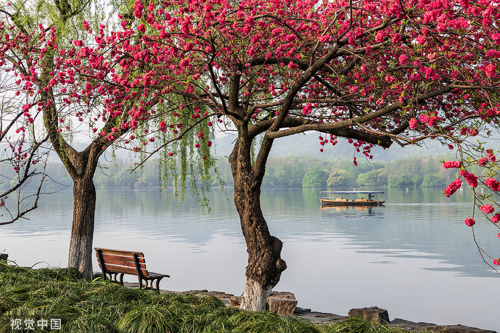

Classic Travel Routes in Hangzhou

West Lake Leisure Route
Walk through the Ten Scenes of West Lake, feel the poetic charm of "always charming in light or heavy makeup", suitable for leisure walking and photo taking, perfect for all ages.
- Stop 1: Su Causeway Spring Dawn (cherry blossom viewing in spring, beautiful scenery all year round)
- Stop 2: Three Pools Mirroring the Moon (iconic landscape of West Lake, take a boat to the island)
- Stop 3: Leifeng Pagoda (climb up to overlook the panoramic view of West Lake)
Duration: 1 Day
View Attractions
Lingyin Temple Zen Route
Visit the thousand-year-old ancient temple, experience Zen culture and quiet natural scenery, suitable for visitors who like tranquility and seek spiritual relaxation.
- Stop 1: Lingyin Temple (a famous Buddhist temple in China, with a long history and strong incense)
- Stop 2: Feilai Peak (a treasure trove of stone carvings, with Buddhist statues from the Five Dynasties to the Yuan Dynasty)
- Stop 3: Yongfu Temple (hidden beside Lingyin Temple, quiet environment, ideal for meditation and blessing)
Duration: Half Day - 1 Day
View Attractions
Qiandao Lake Resort Route
Wander among the thousand islands and clear waters, experience the charm of lakes, mountains and islands, suitable for family vacations and leisure relaxation.
- Stop 1: Central Lake Area (climb Meifeng Island to overlook the panoramic view of Qiandao Lake)
- Stop 2: Yule Island (experience fisherman's life and taste organic fish from Qiandao Lake)
- Stop 3: Moonlight Island (composed of several small islands, walk on the floating bridge and enjoy the lake view)
Duration: 1-2 Days
View Attractions